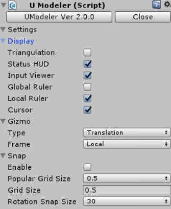
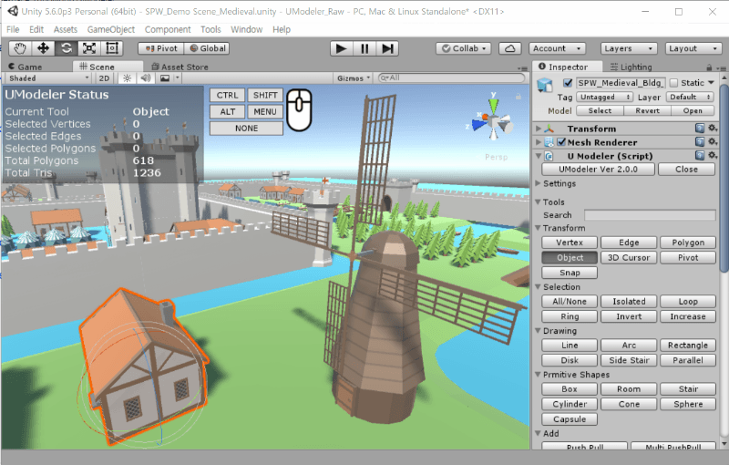
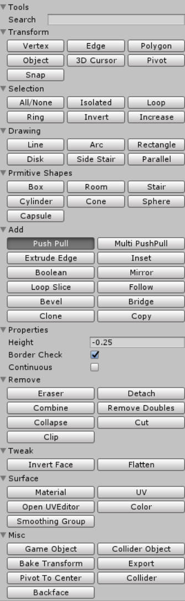
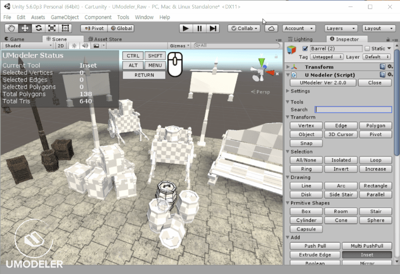

Overview¶
Introduction¶
UModeler is a ultimate and intuitive modeling extension that is available on Unity Editor. You can draw 2D shapes on any polygons in easy ways and turn them into 3D shapes intuitively.
Moreover UModeler has also adopted useful features of popular DCC tools like Max and Blender etc to empower you to create complicated and rich mesh assets as well as game levels easily and quickly without any help of the external DCC tools.
Layout¶
{kind=link}
UModeler Layout
[1]Working Area- Editing meshes.
[2] UModeler Inspector
UModeler Inspector -
HeaderandSettings
- Header
UModeler Ver 2.xx- Opens the About dialog box.Close- Disables UModeler for the current object.Closes and Opens UModeler component. With Closing state UModeler’s behaviour and visualization are like the normal game object. You can open UModeler tool whenever you want to edit it.
- Settings
- Settings regarding
Display,GizmoandSnap.UModeler Inspector -
Search EditBoxandTools
- Search EditBox
- Searches for a specific tool. This edit box can be activated by pressing
ENTERin the scene view or inspector.Search Edit Box demo
- Tools and Properties
- A set of Tools and Properties
{kind=link}
{kind=link}
{kind=link}
{kind=link}
[3]Status HUD- Information of UModeler mesh
[4]Input Viewer- Viewing which keyboard and mouse buttons are pressed.
[5]Gizmos- Selecting a gizmo among
Translate,RotateandScale. [6]Coordinate Frame- Selecting a coordinate frame of both
GlobalandLocal. [7]UV Editor- The area for editing UVs.
User Interface¶
SPACE |
Confirms the current action. |
ESC |
Cancels the current function or Exit the current tool. |
ENTER |
Enables Search Edit Box. |
CTRL + Z |
Undo |
CTRL + Y |
Redo |
W |
Translation Gizmo |
E |
Rotation Gizmo |
R |
Scale Gizmo |
LMB |
Selects or moves several elements. |
LMB Drag |
Selects or moves several elements. |
SHIFT + LMB or LMB Drag |
Special action depending on the current tool |
CTRL + LMB or LMB Drag |
Special action depending on the current tool |
LMB - Left Mouse Button CTRL - Control Key